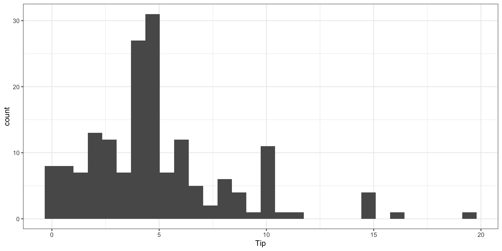
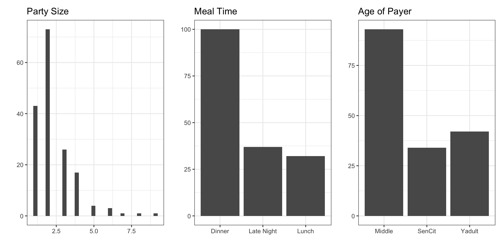
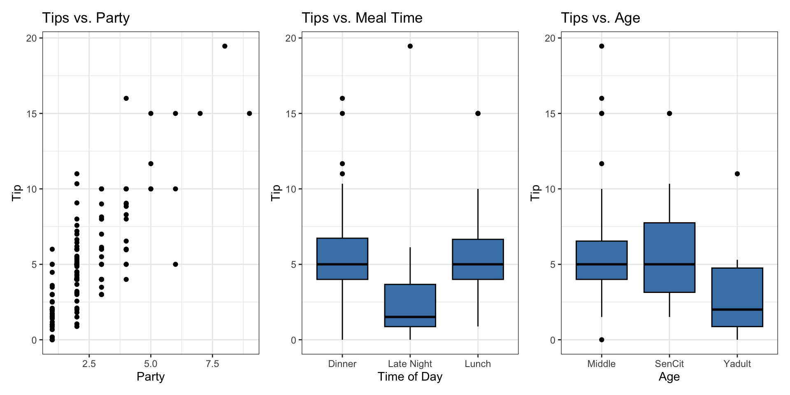
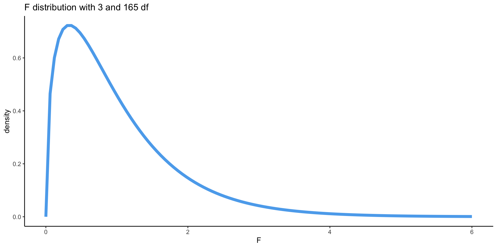

Model comparison
Oct 29, 2024
Announcements
HW 03 due Thursday at 11:59pm (released after class)
Project: Exploratory data analysis due Thursday at 11:59pm
Looking ahead
Project presentations November 11
Statistics experience due Tuesday, November 26
Computing set up
Topics
ANOVA for Multiple Linear Regression
Nested (Partial) F Test
AIC & BIC
Restaurant tips
What affects the amount customers tip at a restaurant?
- Response:
Tip: amount of the tip
- Predictors:
Party: number of people in the partyMeal: time of day (Lunch, Dinner, Late Night)Age: age category of person paying the bill (Yadult, Middle, SenCit)
Response Variable
Predictor Variables
Response vs. Predictors
Restaurant tips: model
model1 <- lm(Tip ~ Party + Age , data = tips)
tidy(model1, conf.int = TRUE) |>
kable(format = "markdown", digits=3)| term | estimate | std.error | statistic | p.value | conf.low | conf.high |
|---|---|---|---|---|---|---|
| (Intercept) | 0.838 | 0.397 | 2.112 | 0.036 | 0.055 | 1.622 |
| Party | 1.837 | 0.124 | 14.758 | 0.000 | 1.591 | 2.083 |
| AgeSenCit | 0.379 | 0.410 | 0.925 | 0.356 | -0.430 | 1.189 |
| AgeYadult | -1.009 | 0.408 | -2.475 | 0.014 | -1.813 | -0.204 |
Test for overall significance
Test for overall significance: Hypotheses
We can conduct a hypothesis test using the ANOVA table to determine if there is at least one non-zero coefficient in the model
\[ \begin{aligned} &H_0: \beta_1 = \dots = \beta_p = 0\\ &H_a: \beta_j \neq 0 \text{ for at least one }j \end{aligned} \]
For the tips data:\[ \begin{aligned} &H_0: \beta_1 = \beta_2 = \beta_3 = 0\\ &H_a: \beta_j \neq 0 \text{ for at least one }j \end{aligned} \]
Test for overall significance: Test statistic
| Source | Df | Sum Sq | Mean Sq | F Stat | Pr(> F) |
|---|---|---|---|---|---|
| Model | 3 | 1226.664 | 408.888 | 98.284 | 0 |
| Residuals | 165 | 686.444 | 4.16 | ||
| Total | 168 | 1913.108 |
Test statistic: Ratio of explained to unexplained variability
\[ F = \frac{\text{Mean Square Model}}{\text{Mean Square Residuals}} \]
The test statistic follows an \(F\) distribution with \(p\) and \(n - p - 1\) degrees of freedom
Test for overall significance: P-value
\[ \text{P-value} = \text{Pr}(F > \text{F Stat}) \]
Test for overall significance: Conclusion
\[ \begin{aligned} &H_0: \beta_1 = \beta_2 = \beta_3 = 0\\ &H_a: \beta_j \neq 0 \text{ for at least one }j \end{aligned} \]
| Source | Df | Sum Sq | Mean Sq | F Stat | Pr(> F) |
|---|---|---|---|---|---|
| Model | 3 | 1226.664 | 408.888 | 98.284 | 0 |
| Residuals | 165 | 686.444 | 4.16 | ||
| Total | 168 | 1913.108 |
What is the conclusion from this hypothesis test?
Testing subset of coefficients
Sometimes we want to test whether a subset of coefficients are all equal to 0
This is often the case when we want test
- whether a categorical variable with \(k\) levels is a significant predictor of the response
- whether the interaction between a categorical and quantitative variable is significant
To do so, we will use the Nested (Partial) F-test
Nested (Partial) F Test
- Suppose we have a full and reduced model:
\[\begin{aligned}&\text{Full}: y = \beta_0 + \beta_1 x_1 + \dots + \beta_q x_q + \beta_{q+1} x_{q+1} + \dots \beta_p x_p \\ &\text{Reduced}: y = \beta_0 + \beta_1 x_1 + \dots + \beta_q x_q\end{aligned}\]
We want to test whether any of the variables \(x_{q+1}, x_{q+2}, \ldots, x_p\) are significant predictors. To do so, we will test the hypothesis:
\[\begin{aligned}&H_0: \beta_{q+1} = \beta_{q+2} = \dots = \beta_p = 0 \\ &H_a: \text{at least one }\beta_j \text{ is not equal to 0}\end{aligned}\]
Nested F Test
- The test statistic for this test is
\[F = \frac{(SSR_{reduced} - SSR_{full})\big/\text{# predictors tested}}{SSR_{full}\big/(n-p_{full}-1)}\]
- Calculate the p-value using the F distribution with df1 = # predictors tested and df2 = \((n-p_{full}-1)\)
Is Meal a significant predictor of tips?
| term | estimate |
|---|---|
| (Intercept) | 1.254 |
| Party | 1.808 |
| AgeSenCit | 0.390 |
| AgeYadult | -0.505 |
| MealLate Night | -1.632 |
| MealLunch | -0.612 |
Tips: Nested F test
\[\begin{aligned}&H_0: \beta_{late night} = \beta_{lunch} = 0\\ &H_a: \text{ at least one }\beta_j \text{ is not equal to 0}\end{aligned}\]
Tips: Nested F test
| Res.Df | RSS | Df | Sum of Sq | F | Pr(>F) |
|---|---|---|---|---|---|
| 165 | 686.444 | NA | NA | NA | NA |
| 163 | 622.979 | 2 | 63.465 | 8.303 | 0 |
F Stat: \(\frac{(686.444 - 622.979)/2}{622.979/(169 - 5 - 1)} = 8.303\)
P-value: P(F > 8.303) = 0.0003 - calculated using an F distribution with 2 and 163 degrees of freedom
The data provide sufficient evidence to conclude that at least one coefficient associated with Meal is not zero. Therefore, Meal is a significant predictor of Tips.
Model with Meal
| term | estimate | std.error | statistic | p.value | conf.low | conf.high |
|---|---|---|---|---|---|---|
| (Intercept) | 1.254 | 0.394 | 3.182 | 0.002 | 0.476 | 2.032 |
| Party | 1.808 | 0.121 | 14.909 | 0.000 | 1.568 | 2.047 |
| AgeSenCit | 0.390 | 0.394 | 0.990 | 0.324 | -0.388 | 1.168 |
| AgeYadult | -0.505 | 0.412 | -1.227 | 0.222 | -1.319 | 0.308 |
| MealLate Night | -1.632 | 0.407 | -4.013 | 0.000 | -2.435 | -0.829 |
| MealLunch | -0.612 | 0.402 | -1.523 | 0.130 | -1.405 | 0.181 |
Including interactions
Does the effect of Party differ based on the Meal time?
| term | estimate |
|---|---|
| (Intercept) | 1.276 |
| Party | 1.795 |
| AgeSenCit | 0.401 |
| AgeYadult | -0.470 |
| MealLate Night | -1.845 |
| MealLunch | -0.461 |
| Party:MealLate Night | 0.111 |
| Party:MealLunch | -0.050 |
Nested F test for interactions
Let’s use a Nested F test to determine if Party*Meal is statistically significant.
Final model for now
We conclude that the effect of Party does not differ based Meal. Therefore, we will use the original model that only included main effects.
| term | estimate | std.error | statistic | p.value |
|---|---|---|---|---|
| (Intercept) | 1.254 | 0.394 | 3.182 | 0.002 |
| Party | 1.808 | 0.121 | 14.909 | 0.000 |
| AgeSenCit | 0.390 | 0.394 | 0.990 | 0.324 |
| AgeYadult | -0.505 | 0.412 | -1.227 | 0.222 |
| MealLate Night | -1.632 | 0.407 | -4.013 | 0.000 |
| MealLunch | -0.612 | 0.402 | -1.523 | 0.130 |
Model comparison using AIC and BIC
Tips: Comparing models
Let’s compare two models:
model1 <- lm(Tip ~ Party + Age + Meal, data = tips)
glance(model1) |> select(r.squared, adj.r.squared)# A tibble: 1 × 2
r.squared adj.r.squared
<dbl> <dbl>
1 0.674 0.664AIC & BIC
Akaike’s Information Criterion (AIC): \[AIC = n\log(SSR) + 2(p+1)\]
Schwarz’s Bayesian Information Criterion (BIC) \[BIC = n\log(SSR) + log(n)\times(p+1)\]
AIC & BIC
\[\begin{aligned} & AIC = \color{blue}{n\log(SSR)} \color{black}{ + 2(p+1)} \\ & BIC = \color{blue}{n\log(SSR)} \color{black}{+ \log(n)\times(p+1) }\end{aligned}\]
First Term: Generally decreases as p increases
AIC & BIC
\[\begin{aligned} & AIC = n\log(SSR) + \color{blue}{2(p+1)} \\ & BIC = n\log(SSR) + \color{blue}{\log(n)\times(p+1)} \end{aligned}\]
Second Term: Increases as p increases
Using AIC & BIC
\[\begin{aligned} & AIC = n\log(SSR) + \color{red}{2(p+1)} \\
& BIC = n\log(SSR) + \color{red}{\log(n)\times(p+1)} \end{aligned}\]
Choose model with the smaller value of AIC or BIC
If \(n \geq 8\), the penalty for BIC is larger than that of AIC, so BIC tends to favor more parsimonious models (i.e. models with fewer terms)
Tips: AIC & BIC
# A tibble: 1 × 2
AIC BIC
<dbl> <dbl>
1 714. 736.Which model do you choose?
Parsimony and Occam’s razor
The principle of parsimony is attributed to William of Occam (early 14th-century English nominalist philosopher), who insisted that, given a set of equally good explanations for a given phenomenon, the correct explanation is the simplest explanation1
Called Occam’s razor because he “shaved” his explanations down to the bare minimum
Parsimony in modeling:
models should have as few parameters as possible
linear models should be preferred to non-linear models
experiments relying on few assumptions should be preferred to those relying on many
models should be pared down until they are minimal adequate
simple explanations should be preferred to complex explanations
In pursuit of Occam’s razor
Occam’s razor states that among competing hypotheses that predict equally well, the one with the fewest assumptions should be selected
Model selection follows this principle
We only want to add another variable to the model if the addition of that variable brings something valuable in terms of predictive power to the model
In other words, we prefer the simplest best model, i.e. parsimonious model
In pursuit of Occam’s razor
Occam’s razor states that among competing hypotheses that predict equally well, the one with the fewest assumptions should be selected
Model selection follows this principle
We only want to add another variable to the model if the addition of that variable brings something valuable in terms of predictive power to the model
In other words, we prefer the simplest best model, i.e. parsimonious model
Alternate views
Sometimes a simple model will outperform a more complex model . . . Nevertheless, I believe that deliberately limiting the complexity of the model is not fruitful when the problem is evidently complex. Instead, if a simple model is found that outperforms some particular complex model, the appropriate response is to define a different complex model that captures whatever aspect of the problem led to the simple model performing well.
Radford Neal - Bayesian Learning for Neural Networks1
Recap
ANOVA for Multiple Linear Regression
Nested F Test
AIC & BIC